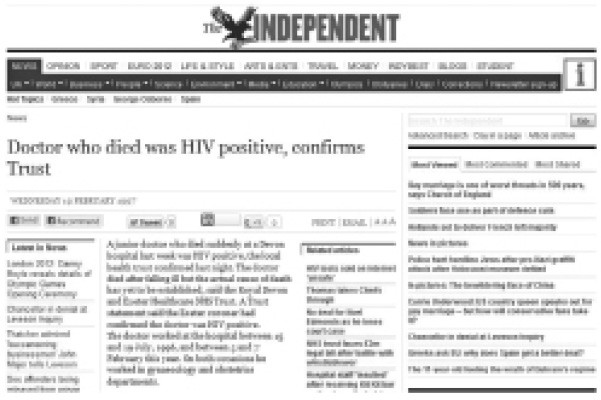

患者会告诉医生私密的事情。公元前500年，“希波克拉底誓词”要求医生宣誓“治病救人过程中，凡我所见所闻……若属不得公之于众之事，本人绝不泄露，定将严守秘密”。至少自那时起，几乎所有人都认可，在一些情况下医生不得披露患者告知的私密事情。大多数人同意，仅在罕见的情况下医生可以泄露患者的秘密信息。然而，是否存在保密的绝对标准？如果不存在标准，为什么会这样？披露信息在什么情况下是正当的？是否存在强制披露信息的情形？这些疑问让许多平时默默无闻的法官使用异乎寻常的哲学语言来阐述自己的观点。
各国和国际医学伦理准则均模棱两可地承认，确立绝对标准是有害的。希波克拉底便是这种模棱两可的典型代表，他似乎承认有些事物可以符合伦理地“公之于众”。美国医学会的《医学伦理规范》则规定，“医生应该……依法保护患者的秘密”，就此将真正的难题交给了法律人。2006年修订的世界医学会《国际医学伦理守则》对此做出了有意义的规定，其中一些限制条款围绕着法律上认为有必要的事项。“医生应尊重患者要求保密的权利。披露医疗秘密若要符合伦理，或以患者同意为前提；或为了患者或他人免受现实而迫在眉睫的伤害威胁，且若不违反保密义务则无法消除威胁。”英国医学总会告诉医生，“患者有权要求将就诊信息作为医生应保守的秘密。你必须对患者的信息保密，在患者去世之后亦应如此”，同时又以大量细致的补充规范充分支撑起这一原则。其他专业的医务人员也有类似的伦理指导原则。
法院已经给出过很多理由，其中一些是有实际意义的。比如，常见的理由是，保守医疗秘密的法律能够促进患者安心地向医生诉说病情。假如患者觉得他们的秘密可能变成医院餐厅的八卦，他们就不太愿意把完整的故事告诉医生。这对患者和医生都不好，最终减少了患者获得必要治疗的机会。保密不仅适用于个别的医患关系，而且适用于整个医学界。假如医学职业共同体不能恪守保密责任，则患者通常 不会那么愿意提供信息，最终造成医学界失信于公众。
另一些关于守口如瓶的原因则更为重要。众所周知，患者有权利 要求保守医疗秘密。
当然，临床医生间明智地交流患者的治疗情况是非常重要的。法律和医学伦理对此的规定都是务实的。这种务实规定建立在对患者合理预期的假设之上。
假设X医生获知了某项医疗秘密，只要对治疗患者是必要的，他便可以将医疗秘密告诉Y医生。为什么会这样？因为这种信息披露在患者的合理预期范围内，所以被推定已经对此表示同意。
但这种推定的同意是有限的，而这些限制常常被扩张。教学医院满是医学生，毫无疑问，在此就诊的患者对于医疗秘密被拿来研讨有合理预期。家庭医生办公室的接待员也许和患者比邻而居、低头不见抬头见，而女性患者对于由该接待员打印人工流产转诊单是否有同样的合理预期呢？
若干种话语模式被用于将伦理立场转换为法律规则。
有的观点将患者的秘密视为一种知识产权。患者的秘密被传递给医生时，其用途受到严格限制。医生就像一个保管人或是受托人，采用授权以外的方式处置医疗秘密则违反信托，这就好比偷偷驾驶别人的汽车兜风。这又像是一份明示或默许的契约，医生同意会守口如瓶，却又破坏了契约。这让我们从另一角度来审视该问题，即医生的良知。拥有良知的体面医生不会像偷偷驾驶别人的汽车兜风那般行事，也不会背弃承诺。行政审判经验丰富的英国上诉法院法官西蒙·布朗总结道：
基于“受托”和“良知”的论证顺利地汇入了责任的概念。事实上，关于保密的法律论证多是在违反保密义务导致的侵权诉讼坩埚中炼成，在这些诉讼中，责任的概念主场作战，得心应手。
这些论证稍显笨拙。如今在很多司法管辖区，相关法律论证逐渐被人权论述的光芒所盖过。《欧洲人权公约》即是一个很好的例证，其第8条第1款规定：“人人享有使自己的私人和家庭生活、住所和通信得到尊重的权利。”这一条是《欧洲人权公约》最具弹性的条文，已经被扩张到起草者未预想到的法律领域，也必然延伸适用到医疗领域。它以患者自主权为起点，往往也以之为终点。“个人数据的保护，”欧洲人权法院在“Z诉芬兰案”（1998）中指出，“尤其是医疗数据，对于个人享有公约第8条规定的私人和家庭生活受尊重的权利至关重要。”无比正确。
人权与契约、信托、义务等论证话语有较大区别，但实质上殊途同归。正如尽职的医生通常不会违反契约，尽职的医生通常也不会侵犯患者的人权。在“坎贝尔诉《镜报》报业公司案”（2004）中，英国上议院指出，在审查违反保密义务的索偿请求时，审查标准是原告是否具有“对隐私的合理预期”。这就把普通法和《欧洲人权公约》的要求融为一体了。《欧洲人权公约》改变了律师们提出医疗保密诉讼请求的方式，但大体来说，它并没有改变这些诉讼请求带来的结果。
隐私和保密可谓水乳交融。在大多数国家，它们的融合日渐紧密。例如，英国的法官们对于过度创新感到不安，坚持认为侵犯隐私本身并不构成侵权，但滥用隐私信息构成侵权。假设一位新闻摄影师拍摄了名人的色情照片，这件事本身是没有错的，只有当他使用照片才会招致法律的制裁。在大多数实际情况下，医疗保密和尚处于起步阶段的隐私保护可以说几乎是一样的。
例如，很多医院的护理站墙上都挂着白板，通常写有患者的身份和生日，也许还载有关于患者病情的信息。任何走进病房的人都可以看到白板。这种情况下，患者的隐私是否被侵犯？当然侵犯隐私，尽管英国的律师们在承认时会带着疑惑。这种情况也违反保密义务。至少在英格兰，关于保密义务的法律和关于滥用隐私信息的侵权法都可以规范这种情形。
长久以来，利益冲突都不难平衡。毋庸置疑，保密当然重要。关于保密的重要意义以及医生相应的义务，可以有诸多的表述。然而，从今往后，问题会变得复杂。患者不是孤岛，患者间存在着千丝万缕的联系。在某种意义上，除非将患者看作他们存在于其中并在很大程度上属于其成分的复杂关系的一部分，他们就无法融贯地得到考察。
被关在一所监管医院的W先生是一个非常危险的人物。他满怀信心地提交了出狱申请，邀请艾基尔医生为他做出鉴定报告，以证明继续羁押是不合情理的。艾基尔医生并没有被表面现象迷惑，其鉴定报告指出W长期对爆炸物有着病态的迷恋，释放W将对社会安全造成严重的威胁。
W的事务律师们的乐观情绪消退了，但他们的决心没有动摇。他们并没有向裁判庭提交鉴定报告。这让艾基尔医生感到不安，于是在没有获得W许可的情况下，医生披露了鉴定报告。W对此怒不可遏，并起诉艾基尔医生，要求其对违反保密义务的行为承担赔偿责任。
该案很好地呈现了大多数司法管辖区的医事法专业人士对于保密义务的看法。一系列得到广泛接受的关键问题被纳入清单。
被披露的信息是否属于应保密的范围？当然是的。在多数常规医疗环境下披露的几乎所有信息都是应保密的信息。如果你愿意，也可以说存在保密责任。如何描述保密责任并不重要，但如果选择使用责任的话语，那么你需要认识到对于患者的责任并不是绝对的，其通常被诸如“……除非……”的表述所限制。这是否意味着医生对患者以外的其他人负有相冲突的责任呢？是的，有这种可能。我们随后会探讨这一点。
信息是否被泄露了？当然，是的。假如这些信息已经存在于公共场合，那么情况会不同。一个公认的针对泄密指控的辩护理由是，该秘密已经被公之于众，甚至被置于头版头条。
那么事情告一段落了吗？W是否由此获得胜诉？答案是否定的，他败诉了。法院认为，本案的关键问题是泄露秘密的公共利益是否高于保守秘密的公共 利益。黑体部分是重点。保守秘密带来的利益并非W的个人利益，这不同于财产权。法院默示赞成保守秘密的功利主义理由。按照这种分析框架，公共利益存在于芸芸众生之中。公共利益高于本案和所有其他医疗保密案件的功利主义考量［参见“W诉艾基尔案”（1990）］。
如今，如果艾基尔医生的行为代表的是公权力机构，该案的争点将是《欧洲人权公约》第8条的规定，价值权衡的过程也相类似。表面上看，W受第8条第1款保障的权利是否被侵犯了？当然。但第8条有两款，第2款规定：“任何公共机构不得干预上述权利（第8条第1款规定）的行使，但是，依照法律规定的干预以及基于在民主社会中出于国家安全、公共安全或者国家的经济福利的利益考虑，为了防止混乱或者犯罪，为了保护健康或者道德，为了保护他人的权利与自由而有必要进行干预的，不受此限。”W的权利受到的干预，显然可以被第8条第2款规定的全部或任意一条理由所正当化。
世界各地的法院几乎都在处理类似的医疗保密争议。世界各国的立法机构和法院都认为，在某些情况下医生必须披露私下获知的医疗信息。这些情形的最佳诠释是，披露信息带来的公共利益压倒一切，高过任何其他可能与之相对的考虑因素。
如果法院命令医生披露信息，他们必须照做。如果拒绝，那就是藐视法院，可能面临拘禁。在法律程序中追求真相显然是为了公共利益，但假设只能通过披露患者的秘密来发现真相，该如何是好？
在英格兰，不存在“医生——患者特权”这种允许或要求医生保持沉默的概括式规则。但在民事诉讼和刑事诉讼中，假如患者的秘密可能因为回答询问或提供文件而被泄露，法院在决定是否要求回答或文件时会将其纳入考虑范围。法院会进行当下习以为常的演绎，衡量披露秘密与否对公共利益的影响。
这通常被称作“合比例性”（proportionality）。
在美国，大多数州的证据规则为患者反对医生披露秘密提供了零星的、附条件的保障。这些证据规则往往重点处理心理医生的保密问题。美国联邦最高法院将心理医生的沙发视为现代告解室，尊重其神圣价值，就心理医生的保密问题创制了可论证但较脆弱的特权，但《联邦证据规则》并未规定这种特权［参见“雅菲诉雷德蒙案”（1996）］。
不出意料，对于何种信息披露符合公共利益，不同司法管辖区存在明显不同的看法，但也存在一些共同的元素。通常认为，对社会有益的是：为了获知何人在世，可以强制披露有关出生和死亡的医疗事实；为了社会成员不受传染病的侵害，公共卫生法律要求医生披露患者患有特定传染病的隐私事实；为了让社会远离恐怖主义，在包括英国在内的很多国家和地区，关于恐怖分子的信息被要求上报，即便这些信息载于病历或是来自其他保密咨询过程。
除了这些相当清晰（通常载于制定法）的情形，法院的立场在伦理上要远为含糊，面临着法律上的困境。
假设患者告诉心理医生，他打算杀死妻子。由于恪守不可违背医疗保密义务的准则，心理医生虽然相信他的话，却没有向任何人透露。患者殴打妻子致其死亡，妻子的亲属能成功起诉心理医生吗？
他们会主张：“违背对患者的保密义务是你的责任。这是对患者妻子的责任。”
一些司法管辖区对这种观点持积极态度，这其中就包括美国加利福尼亚州和英格兰［参见“泰瑞索夫等人诉加利福尼亚大学校董会案”（1976）和“帕尔默诉南提斯卫生局案”（1999）］。这些案件均是侵权诉讼，其关注的问题是被告X是否对原告Y负有义务。不愿向X强加对世义务 [6] 是可以理解的，关联性、可预见性和合理性等审查方法被用来限缩义务的范围。
假如获知的并非对患者妻子的威胁，而是对不特定人群的威胁，但医生没有披露医疗秘密，侵权法又该如何应对这种情形呢？假如不特定人群中的一位恰好被刺中喉咙，他能否起诉心理医生，参照上例中死去的妻子的主张：“你有责任为了我而违背对患者的保密义务”？
侵权法处理这一诉讼请求会更棘手，但从公共政策的角度，这个棘手的决定是否意味着法律要对心理医生课以披露医疗秘密的义务？一般法律上保密义务的公共利益问题并不能照搬到侵权索偿的私法世界，但对被刺伤的受害者作以下陈述定是令人不悦的：“尽管公法和私法的协调一致很重要，但恐怕私法优于公法。你没有索偿权。”难道不该是依靠伦理而非人造的法理来快刀斩乱麻？难道不该简单地反驳：“揭发患者是否真有那么合情合理，以至于心理医生没有理由不去揭发？”
在大多数司法管辖区，法律都感受到了这一问题的威力。但在几乎所有案件中，法律都不赞成披露的合理性如此明显，以至于要求医生必须 披露信息。
在大多数困扰良心的案例中，法律甘愿指出医生可以 披露信息而不受制裁。因此，通常情况下，无论是否披露信息，医生都不会受到法律上的指责。
行业自律组织被誉为行业的良心，法律常常合情合理地从它们那里寻找灵感。例如，假设英国医学总会规定在某些情况下信息披露具有强制性，那么法律会跟随其后，行规于是被转化为法律。强制披露的例子很罕见，这表明专业界并不愿意为每一种可能的情形立法。
这个问题可以从两个方面讨论。一方面是秉持司法开明的信条，理解医生们在临床工作一线所面对的可怕困境。另一方面则是更多从法律的基本原则进行探讨。
其一，来自司法的同理心。医事法的领域多数是无人区，遍布着错综复杂的法律原则，满是诉讼炮弹撞出的陨石坑。关于保密的法律是一个典型的例子。在大多数实际案例中，法律人和医务人员不得不在混乱中杀出一条自己的路。他们要么从已决案件进行不那么恰当的类推，要么遵循行业自律组织制定的守则，要么追随他们自己的良知。
法律上认为，如果披露秘密的公共利益高于保守秘密的公共利益，那么违反保密义务不可诉。这种权衡往往极为困难。实践中，每一个临床医生都会进行权衡，而你无法对每一个涉及保密的问题提起诉讼。临床医生必须在既缺乏律师们详细论证的支持（理论上），又缺乏充足时间来思考（实际上）的情况下进行权衡。因此，法院友善地裁决临床医生们的决断也就不足为奇了。如果医生披露了秘密，法院会说，这是合法的，我们能理解背后的原因。如果医生未披露秘密，法院也会说，这是合法的，我们能理解背后的原因。
其二，合法而非必要地披露秘密的法律基本原则。
法律人思考这个问题的起点由专业组织设定。法律很少比同行本身对行业设定更严格的规定，法律的规定往往更宽松。然而，专业组织规模越大，伦理守则就越笼统而不实用。例如，世界医学会建议，在“患者或他人面临的真实而迫在眉睫的威胁”仅能通过违反保密义务来避免时，医生可以披露医疗秘密。这一标准对于大多数司法管辖区而言过于宽松。可能给第三方造成重大伤害的远期风险，能否成为披露秘密的正当理由？世界医学会的答案似乎是肯定的。许多其他的行业自律组织则更为谨慎。英国医学总会认为，在不披露秘密“可能使他人陷于死亡或严重伤害的风险时……如果存在可能，你应当继续寻求患者对披露秘密的同意，并且考虑到患者拒绝的任何原因……这种状况也许会存在于——例如——披露秘密有助于预防、侦查或追诉严重犯罪的情形下，特别是针对人的犯罪”。美国医学会建议：“当患者威胁要对他人或自己造成严重身体伤害，且患者存在合理的可能性实施该行为时，医生应采取合理的预防措施来保护潜在受害者，措施可以包括通知执法机构。”
这些问题在实践中呈现为何种样态？也许，医生会觉得有义务将一个掠夺成性的、潜在的斧头杀手扭送警方。但即使在今天，这也不是大多数医生的日常。更常见的情形是传染性疾病带来的风险。
一名商人到诊所就医时坦陈，在近期的泰国之行中，他与一名性工作者进行了不安全的性交。他担心自己可能感染了艾滋病毒。他有理由这样担忧，也确实很担忧。医生询问他配偶的情况。患者答道，她不知道，他也不会告诉她。此外，患者不打算停止与妻子发生性关系，也不打算使用安全套。
医生应该怎么办呢？
在大多数司法管辖区，医生可以放心大胆地告诉患者妻子，她正处于风险中。实际上，法律越来越倾向于规定医生应该这么做。在妻子同为该医生所收患者的情形中，侵权法越来越倾向于制裁医生不披露的行为。但是无论医学伦理还是关于保密的一般法律，均未要求医生提醒生命健康受到威胁的人，这涉及披露秘密的公共 利益问题。妻子只是公众中最直接暴露于病毒的部分。

图3 有时明显泄露医疗秘密的行为被认为正当，因为披露秘密的公共利益高于保守秘密的公共（或私人）利益
儿童、缺乏行为能力的患者以及死者的秘密
关于同意权的法律与关于保密的法律形影不离。患者同意时，披露秘密是合法的；反之，则让人感到不安。但是，有一些患者无法行使同意权。幼儿欠缺必要的心智来理解披露秘密与否的利害关系。人的行为能力可能因疾病或外伤而受到影响。而众所周知，逝去的人无法表达意见。
因此，涉及儿童和缺乏行为能力的患者时，关于保密的法律遁入关于同意权的法律，这就不足为奇了。在所有的司法管辖区，情况皆是如此。因此，在英格兰，相关问题的出发点是患者的最佳利益。如果经初步认定，披露秘密有违患者的最佳利益，那么秘密被推定不得披露。但是，在其他关于保密的法律中，事情还没结束。他人的利益也将被纳入考虑范围，法官采用与其他的涉及保密义务的案件一样的方式进行权衡。
一个特别棘手的问题是向儿童提供避孕服务。假设一个14岁的女孩就医时提出希望长期服用避孕药，因为她和她14岁的男友有性关系。（如果男友年龄是45岁，情况会大不一样。女孩提供的信息涉及危险的性侵犯嫌疑人，会触发其他的考虑。）
父母是否有权知道女儿的医疗决定？英格兰的法院认为，应当推定父母的参与是有益的［这意味着符合女孩的最佳利益，参见“阿克森诉卫生大臣案”（2006）］，但这种推定可以被推翻。美国医学会就此问题也给出了几乎相同的意见［参见《意见5.055：未成年人的医疗保密》（1996）］。不难理解向父母披露女儿的医疗秘密的推定为何很容易被推翻：如果女孩认为就医信息可能被透露给父母，她们寻求医疗帮助的念头会打消。
在大多数国家，死者不属于诽谤罪的对象，但死者的秘密可能例外地受到保护。专业组织（例如英国医学总会和美国医学会）要求医生在患者死亡后继续保守医疗秘密，并遵照通常的准则进行权衡。然而，家人和亲友希望了解死因的利益似乎非常重要。人们可能会认为这是在承认，揭示真相和驱散焦虑符合公共利益，但这也许有些矫揉造作。
在总体上赞许这些善意表达的同时，法律却倾向于坐视不管。英国的“刘易斯诉卫生大臣案”（2008）即是一个例证。该案的判决认为，保密义务是否持续到患者死亡以后可以商榷 。
同意权是保密的近亲。我们接下来将拜访这位近亲。